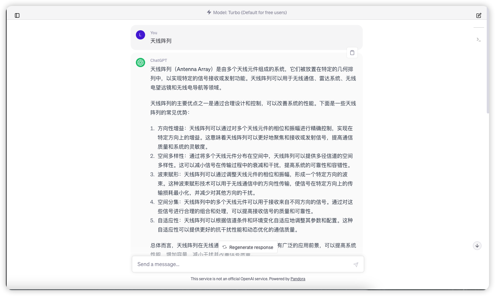

ChatGPT本地安装
本地搭建ChatGPT，无需API、 免翻墙使用纯正OpenAI的全部功能。
和官网的比较
优点：
- 不需要挂代理就可以访问
- 相比官网而言速度更快
缺点：
- 后台要挂Docker
- 和使用API不同，并不是真正意义上的本地部署，只是通过自己的Access TOKEN避免了网络代理
操作步骤
1、下载并安装Docker（官网链接）
2、使用开源项目：潘多拉 (Pandora)
一键安装命令：
1 | docker pull pengzhile/pandora |
1 | docker run -e PANDORA_CLOUD=cloud -e PANDORA_SERVER=0.0.0.0:8899 -p 8899:8899 -d pengzhile/pandora |
3、获取自己的Access TOKEN：http://chat.openai.com/api/auth/session 14天内免代理登录
4、访问本地链接：http://127.0.0.1:8899 可以实现与官网的同步

本博客所有文章除特别声明外，均采用 CC BY-NC-SA 4.0 许可协议。转载请注明来源 KiCheng's Blog！